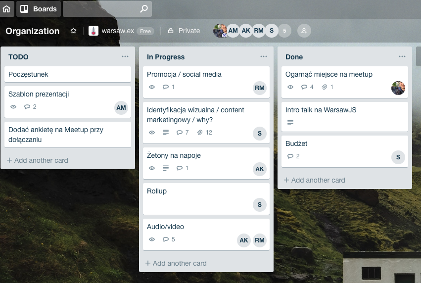
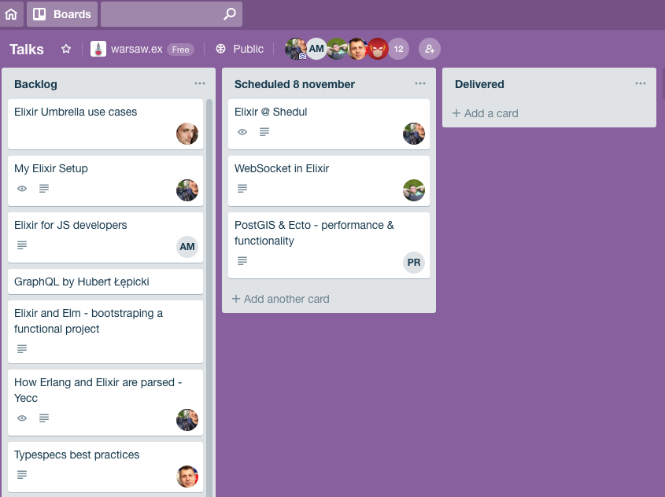

Keynote
2018-11-08

Kamil Kowalski
@kamil_kowalski
Transforming the beauty industry at Shedul / Fresha.
Hello Warsaw 👋
Why?
- To build a community
- To improve our skills
How?
Meetup and Facebook
Meetup: meetup.com/warsaw-ex
Facebook: facebook.com/warsawex.meetup
Slack
Stay in the loop at
Trello
 Organization board (left) and talks pipeline (right).
GitHub
Check out code and presentations at
What is Elixir?
- Functional, dynamic programming language
- Created by José Valim of Plataformatec 💪
- Leverages 20+ years of Erlang/OTP experience
- Focused on productivity and great programmer experience ✨
Story time
- 1986 - initial Prolog-based Erlang implementation
- 1992 - BEAM implementation starts
- 1996 - first OTP release 🚀
- 2011 - first release of Elixir
- 2012 - major rewrite and v0.5.0 🎉
What's so cool about it?
Platform maturity
- Takes lesson in previous work 📖
- Keeps hight productivity
- Mix helps with building 🏗
- Built-in formatter helps avoid bikeshedding 🚲
- Hex manages dependencies
- ExDoc generates beautiful documentation 📜
- Compatibility with Erlang extends ecosystem
- Great libraries and frameworks (e.g. Phoenix, Ecto)
Resources
- History of Erlang
- Programming Elixir 1.6 by David Thomas
- Metaprogramming Elixir by Chris McCord
- Programming Ecto by Darin Wilson and Eric Meadows-Jönsson
Elixir @ Shedul
2018-11-08
Karol Słuszniak
cloudless.studio
Husband and father @ home
CTO and Elixir evangelist @ Shedul
Why?
- Scalability & performance: webserver concurrency, websockets, raw performance
- Productivity: syntax, cheap microservices, compile-time perks, test perks
Challenges
- Bootstrap Rails developers
- Overcome backend dualism
- Cover missing deps
Bootstrap Rails developers
Overcome backend dualism
- Embraced Docker 🐳
- Migrated CI flow to CircleCI
- Merged all projects to monorepo using exodus 👋
- Implemented automated deployment script 🤖
Cover missing dependencies
- List all Ruby deps
- Scratch good replacements (e.g. ecto, exq) 🔃
- Decide on risky ones (e.g. ex_phone_number, arc_ecto) 🤔
- Implement missing ones (e.g. jabbax, protein) 🖥
Coding challenges
- Call Ruby code from Elixir
- Configure apps via environment variables
- Share session with Rails
- Render JSON API
Upcoming challenges
- Add custom linter rules
- Move all apps to umbrella ☂️
- Structure code in contexts
- Introspect production 🔍
Resources
- Shedul OSS - github.com/surgeventures
- Phoenix on Rails blog
- Adopting Elixir by Ben Marx, José Valim and Bruce Tate